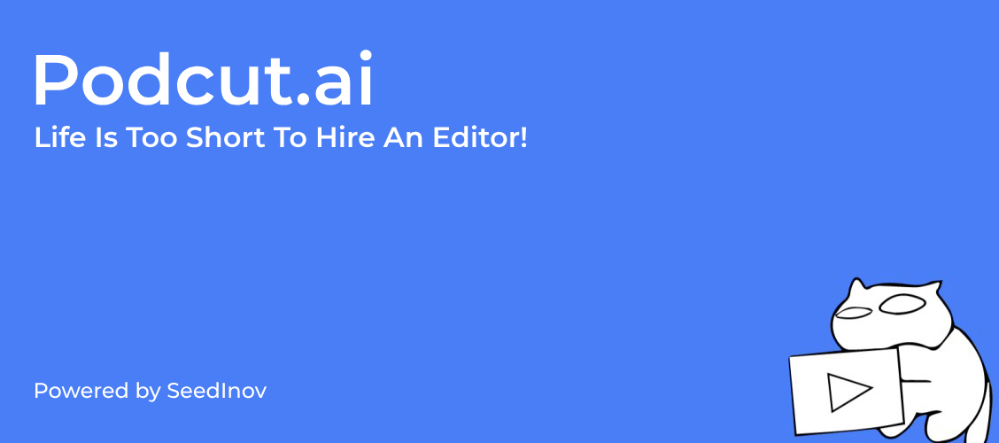
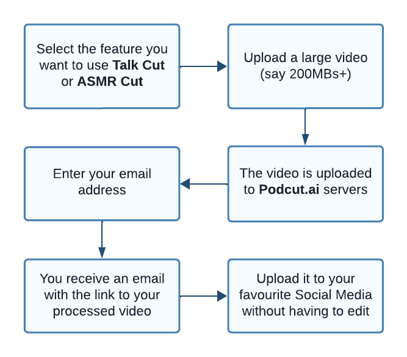

@@include('header.htm')
@@include('blocks/nav-3.htm')
@@include('blocks/page-header.htm', {
"title": "Podcut.ai - Auto Jumpcut your videos with AI",
"description": "A web app that uses AI to automatically jumpcut your videos."
})

<!-- SECTIONS
    ================================================== -->

<section class="section" id="single-project" style="font-size: 1rem;">
  <div class="container">
    <div class="row justify-content-center">
      <div class="col-lg-10">
        <div class="row">
          <div class="col-lg-12">
            <div class="project-lg-img">
              
            </div>
            <div class="project-details-info">
              <div class="info-block-2">
                <h5>Category</h5>
                <p>Artificial Intelligence</p>
              </div>
              <div class="info-block-2">
                <h5>Website</h5>
                <a href="https://www.podcut.ai" target="_blank">podcut.ai</a>
              </div>
              <div class="info-block-2">
                <h5>Services</h5>
                <p>Web Development, AI</p>
              </div>
            </div>
          </div>
        </div>

        <div class="row justify-content-center">
          <div class="col-lg-12">
            <!-- <h1>Case Study: The Podcut.ai Project</h1> -->
            <p>
              Dive into the story behind SeedInov&apos;s work on Podcut.ai, where we helped a client turn a good idea
              into a great
              product. Our case study takes you behind the scenes of how we took a simple video editing concept and
              built it into
              a user-friendly web app that's now making waves in the content creation world. From coding to consulting,
              we did it
              all. So, grab a coffee, settle in, and see how we're proving that sophisticated video editing doesn&apos;t
              have to
              be
              complicated—or require a professional editor.</p>
          </div>
          <div class="col-lg-12 mt30">
            <h3>Client Objective: Revolutionizing Content Creation with Podcut.ai</h3>
            <div class="project-single-info">
              <p>Our clients, visionaries in the content creation space, recognized the need for a tool that could
                simplify the video
                editing process. They envisioned Podcut.ai: a platform capable of transforming raw footage into polished
                content by
                automatically removing background noise and long pauses. The goal was to make video editing effortless,
                ensuring that
                videos are engaging and professional without the need to invest in extensive editing skills or
                resources.</p>
            </div>
          </div>
          <div class="col-lg-12">
            <h3>Our Engagement: Engineering a Cutting-Edge Solution</h3>
            <div class="project-single-info">
              <p>SeedInov partnered with the client to bring this vision to life. Our role was crucial in transitioning
                Podcut.ai from
                a concept to a fully functional web application. We provided comprehensive services, including web
                development, AI
                integration, and strategic consultancy, all tailored to meet the project's unique demands.</p>
            </div>
          </div>
          <div class="col-lg-12">
            <h3>The Product: Podcut.Ai, An Innovator's Dream</h3>
            <div class="project-single-info">
              <p>Podcut.ai boasts intuitive features such as "Talk Cut," intelligently emphasizing vital dialogue
                components, and "ASMR Cut," which reduces background noise and preserves ambient sounds. Our strategic
                use of technology, employing React for the front end and Django for the backend, transformed Podcut.ai
                from a basic GUI into an advanced web application.</p>
            </div>
          </div>
          <div class="col-lg-12">
            
          </div>
        </div>

        <!-- <div class="row justify-content-center mt30">
          <div class="col-lg-6">
            <div class="project-info mt30">
              <h3>The Product: Podcut.ai, An Innovator's Dream</h3>
              <p>Podcut.ai stands out with its intuitive features:
              </p>

              <ul class="list-unstyled">
                <li>
                  <h4>Talk Cut</h4>
                  <p>A feature that intelligently distinguishes speech from silence, ensuring that only the vital
                    components of dialogue
                    are presented.</p>
                </li>
                <li>
                  <h4>ASMR Cut</h4>
                  <p>A specialized tool that reduces background noise and removes awkward pauses while preserving
                    desirable ambient
                    sounds.</p>
                </li>
              </ul>
            </div>
          </div>
          <div class="col-lg-6">
            
            </div>
            </div> -->

        <h3>Who better to explain the product than the Founders themselves</h3>

        <iframe style="width: 100%;height: auto; min-height: 30rem;" class="mt30"
          src="https://www.youtube.com/embed/oBJRSCDhqic" title="WTF Is Podcut.Ai ?!" frameborder="0"
          allow="accelerometer; autoplay; clipboard-write; encrypted-media; gyroscope; picture-in-picture; web-share"
          allowfullscreen></iframe>

        <div class="row justify-content-center mt30">
          <div class="col-lg-12">
            <h3>SeedInov's Strategy: From Basic GUI to Advanced Web Application</h3>
            <div class="project-single-info">
              <p>Our team's expertise was instrumental in evolving Podcut.ai's user interface into an advanced web
                application.
                By employing a sophisticated tech stack—React for the front end and Django for the backend—we created an
                application that's as robust as it is user-friendly.</p>
            </div>
          </div>
          <div class="col-lg-12">
            <h3>The Outcome: A New Era of Video Editing
            </h3>
            <div class="project-single-info">
              <p>Podcut.ai is more than a product; it's a game-changer in the content creation industry. By automating
                critical
                editing tasks, Podcut.ai empowers creators to produce high-quality content efficiently. SeedInov is
                proud to
                have been part of this transformative journey, providing a tool that stands true to the client's
                tagline:
                "Life's too short to hire a video editor."</p>
            </div>
          </div>
          <div class="col-lg-12 mt30">
            <h3>Reflecting on SeedInov's Role
            </h3>
            <div class="project-single-info">
              <p>At SeedInov, we take pride in being more than just a service provider. We are enablers of innovation,
                collaborators in technology, and partners in our clients' success stories. Our involvement in the
                Podcut.ai
                project exemplifies our commitment to delivering solutions that not only meet but exceed our clients'
                expectations.
              </p>
            </div>
          </div>
        </div>

      </div>
    </div>
  </div>
</section>

@@include('blocks/footer.htm')

@@include('footer.htm')